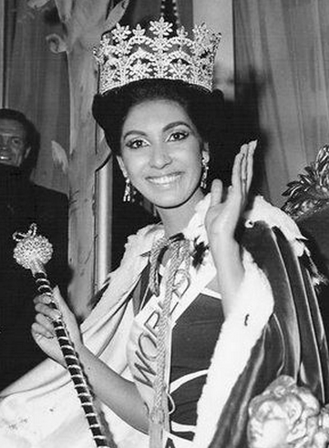
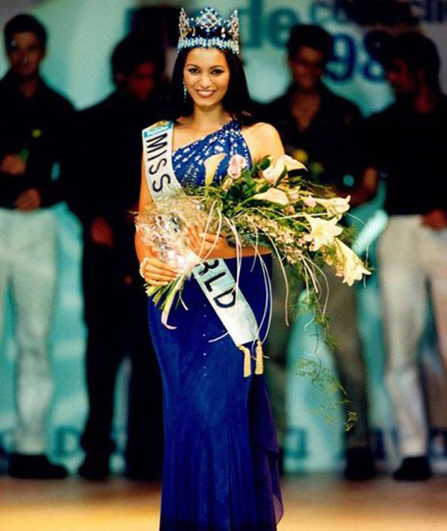
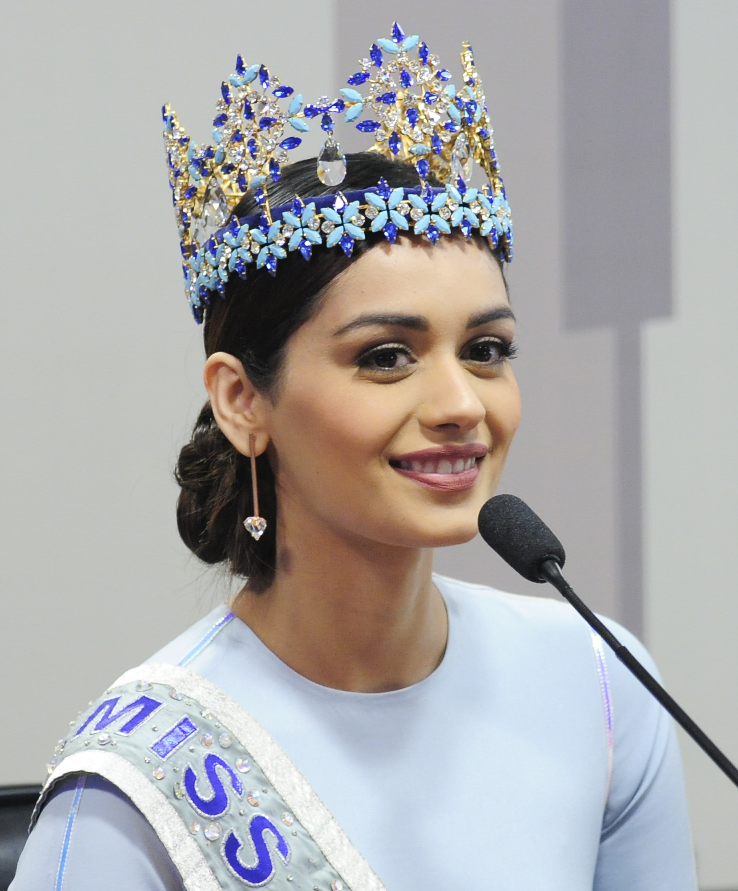
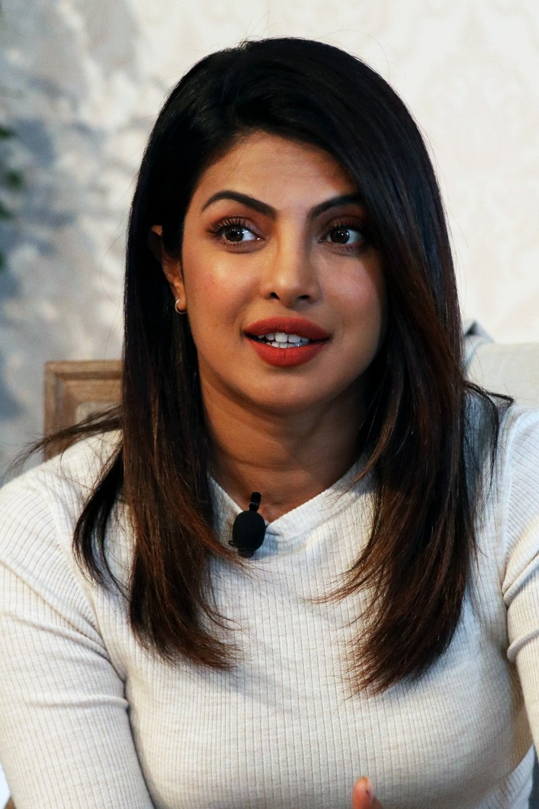
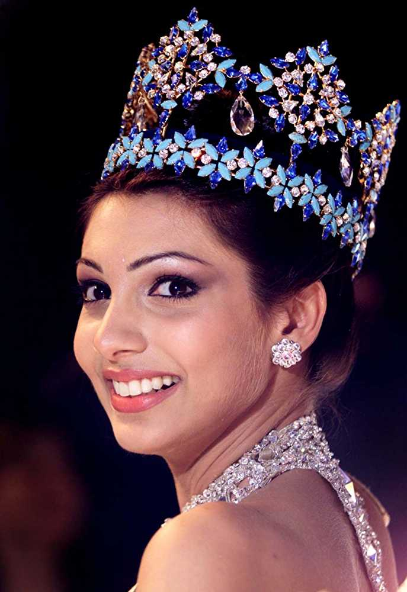

Faria was born in Goa. After winning the Miss Mumbai Crown, she won the Eve's Weekly Miss India contest.
click here

Diana Hayden (born 1 May 1973) is an Indian actress, model, and the winner of Miss World 1997 pageant.
click here
Aishwarya Rai (born 1 November 1973),is an Indian actress, model and the winner of the Miss World 1994 pageant.
click here

Manushi Chhillar (born 14 May 1997) is an Indian model and the winner of the Miss World 2017 pageant.
click here

Priyanka Chopra Jonas (born 18 July 1982) is an Indian actress, singer, film producer, and the winner of the Miss World 2000 pageant.
click here

Yukta Mookhey (born 7 October 1979 in Bangalore, India) is an Indian actress, model and the winner of the Miss World 1999 pageant.
click here